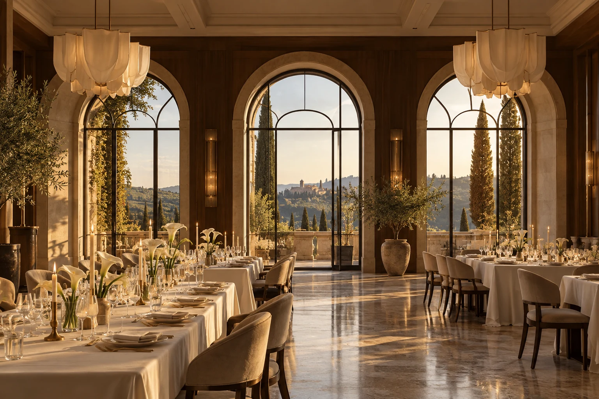
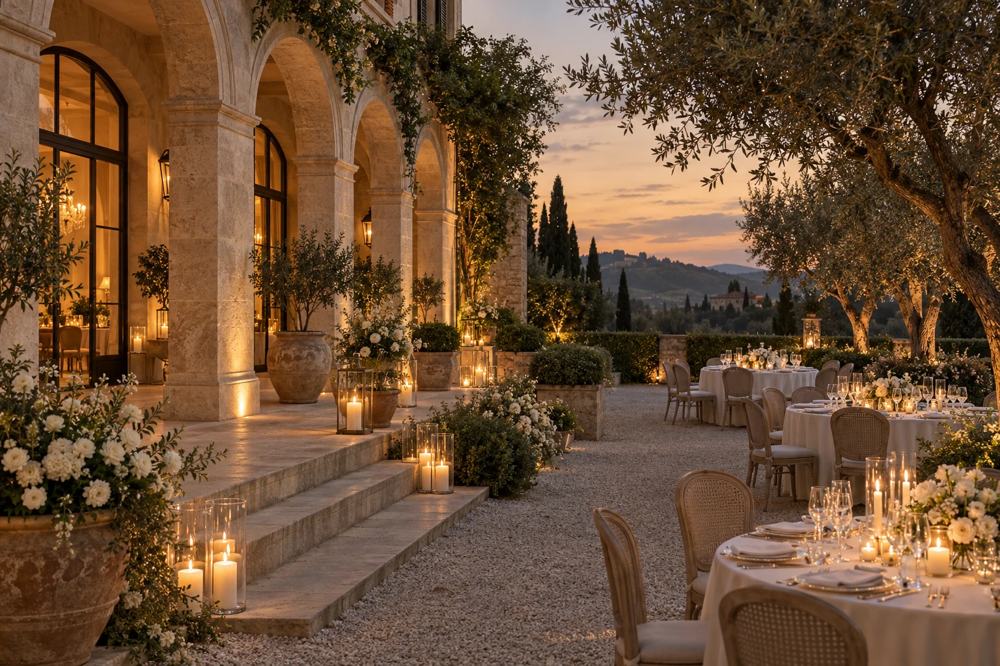
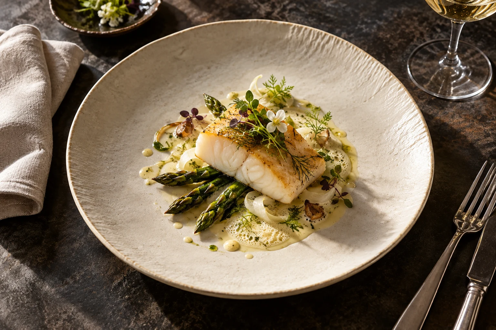

01 / Le grand salonБольшой
Большой
салон.
Высокие арки, длинные столы и тёплый свет. Пространство для торжественного ужина, который незаметно становится вашим любимым вечером.
Этот салон ↗
Тёплый свет на камне. Тихий звон бокалов. Длинный стол, за которым все свои. Мы начинаем с того, каким вы хотите запомнить этот день.
Выбрать зал ↗От первого «да»
до последнего танца.
Высокие арки, длинные столы и тёплый свет. Пространство для торжественного ужина, который незаметно становится вашим любимым вечером.
Этот салон ↗
Церемония на воздухе, бокал на закате, разговоры среди зелени. Здесь легко забыть о времени и просто быть рядом.
Эта терраса ↗Близкие люди за одним столом. Личные тосты, неспешный ужин и внимание к каждому гостю — для истории, которой не нужна большая сцена.
Камерный ужин ↗Сезонные продукты. Точная подача.
Меню, собранное вокруг вашего вечера.

Три кадра — одно настроение.
Церемония, ужин, танцы. Обсудим ритм вечера и соберём пространства под него.
Учтём любимые блюда и особенности питания. Финальное меню согласуем лично.
Цвет, свет, рассадка, цветы. Детали должны звучать вместе, а не спорить за внимание.
Важно, чтобы каждому было удобно. Обсудим логистику и пожелания гостей заранее.
Расскажите, что для вас важно.
Дата, любимые люди и ваше настроение.
Сохраните пожелания — к ним удобно вернуться при обсуждении площадки.